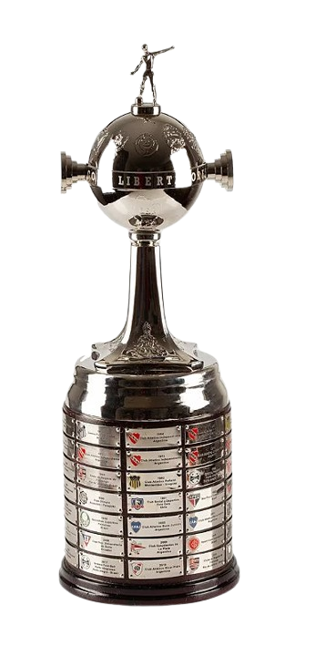
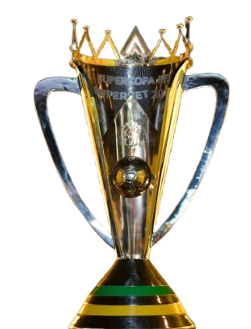

Jogos
282
Primeira fase de impacto criativo, títulos grandes e números sólidos em todas as frentes mais pesadas.
| Competição | Jogos | Gols | Assistências |
|---|---|---|---|
| Brasileirão | 187 | 93 | 111 |
| Copa do Brasil | 15 | 12 | 11 |
| Libertadores | 61 | 37 | 32 |
| Recopa | 6 | 3 | 3 |
| Supercopa | 3 | 0 | 4 |
| Intercontinental | 6 | 0 | 3 |
| Supermundial | 4 | 1 | 0 |
| Total | 282 | 146 | 164 |

